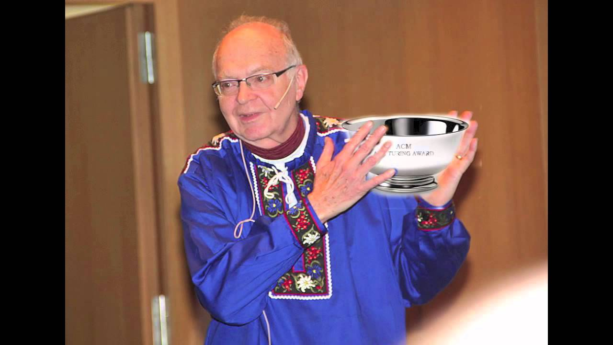

Fulton2455
The Root of all Evil
January 18, 2026 · Life · Computer Science
All over the internet today, you’ll find videos titled “Day in the Life” or “Week in the Life.” These clips are meant to show someone’s routine, but the problem is that the routine is always perfect. The person wakes up before the sun, finishes a workout, eats avocado toast, and still makes it to their 9–5.
The video leaves the viewer inspired, ready to change their life and build the perfect routine. But I would argue that this kind of motivation can actually be detrimental. Donald Knuth, the renowned mathematician and computer scientist, once said, “Premature optimization is the root of all evil.” Knuth was talking about algorithms, but I’d argue the same principle applies to life. Trying to optimize everything all at once can stunt growth instead of fueling it.
Influencers shouldn’t tell the world what is and isn’t “optimal.” What’s optimal for one person may be completely unrealistic for another. A fitness influencer without a 9–5 job can afford to train twice a day, meal prep perfectly, and journal every night. A single mother with three kids trying to put food on the table cannot.
If that mother watches the same video, she might live that “optimal” life for a day or two. But when the motivation fades and she misses a day, she’ll feel like she failed and likely quit chasing her goals altogether. By generalizing what’s optimal, people with different life circumstances end up chasing someone else’s version of success instead of their own.
You should chase your version of optimal, but it doesn’t come from changing your entire life at once. In Knuth’s full quote, he adds:
“We should forget about small efficiencies, say about 97% of the time… yet we should not pass up our opportunities in that critical 3%.”
I’d argue that 97% of your life can’t, or shouldn’t, change overnight. But that small 3% is where real progress lives. If I were just starting to run again with the goal of finishing a 5K, I wouldn’t even run on day one. I’d walk a quarter mile. It wouldn’t feel impressive, but that’s the point. The changes that actually stick are small, repeatable, and easy to start.
So don’t ask, “What’s the perfect routine?”
Ask, “What’s the smallest thing I can do today that moves me forward?”
Because progress doesn’t come from perfection. It comes from consistency.
Donald Knuth with the Turing award, informally known as the Nobel Prize of Computer Science. Knuth won the award in 1974 primarily for his work on his book series, The Art of Computer Programming